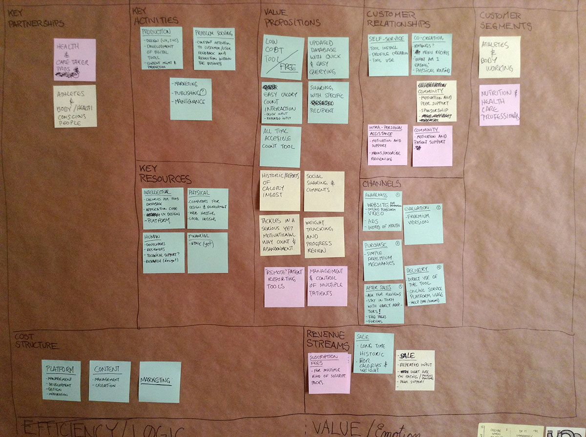
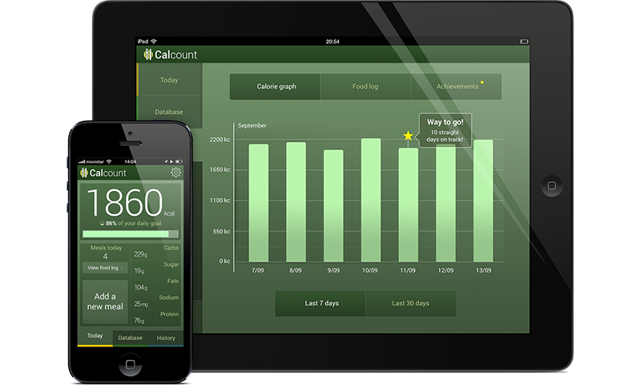
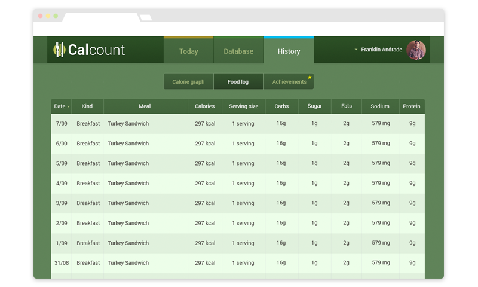

Calcount
Caloric Intake Recording App Concept
Generative Exploration Workshop, Challenge Map, Business Model, Journey Map, Wireframes, Visual Design
Most people trying to embark on the quest for serious dieting - for aesthetic or health reasons - find that is quite hard to maintain a detailed record of their eating habits, even more getting detailed info on the breakdown of what they're eating.
Exploring the topic yielded 3 basic reasons why keeping a record is hard:
- Counting calories per meal is hard.
- Reading nutritional information is hard.
- The lack of visible progress can hinder your habits.
The basic features: meal recording + calorie counting, some might consider that the graph and the achievements are not useful, but they are key for helping people keep up with a vision of themselves.
Process

Led a short workshop with 2 friends that kindly offered themselves to help me explore and understand the topic. Came up with a lot of great ideas and an initial Business Model for a solution, then it led to listing and prioritisation of features.
This was the general process I followed:
- Kickoff meeting, idea discussion, project conditions.
- Workshop: topic exploration & challenge map.
- Business model design & journey mapping.
- Feature prioritization, User stories generation.
- Wireframes sketching.
- Visual design proposal.
- HTML + CSS coding.
Visual Mockups
iOS Devices

Also a browser version could allow other service uses, decided to make a visual concept for the "Meal History" view:
Desktop / Browser App

My role
My overall work with this concept could be summarised in this four items:
- Workshop leading.
- Service journey mapping.
- Business model design.
- Interaction and visual design.